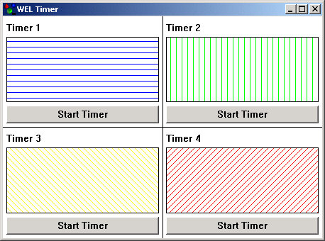

Timer Sample

Compiling
To compile the example:
- Launch [BENCH].
- Select Use existing Ace (control file) and click OK.
- Browse to Eiffel50\examples\wel\timer\.
- Choose Ace.ace
- Choose the directory where the project will be compiled, by default the same directory containing the Ace file.
- Click OK.
Running
After launching the program, a window will be displayed as illustarated above. Clicking on any of the push buttons marked "Start Timer" will
start a timer running, and the hatched area immdiately above the push button will change its appearence to reflect the interval of the timer.
Under the Hood
A WEL_WINDOW supports multiple timers, set
by set_timer which takes a unique id for each timer.
The on_timer feature is called every time a timer interval is reached with an argument
corresponding to the id of the timer. Within MAIN_WINDOW, on_timer
has been redefined to update the appearence of the hatched areas.
This sample contains the following classes: